Angrier Jordan · Music presentation revision 01
AJ materials, palette and typography. Reference-inspired module hierarchy. Deterministic fixture renders — not live Discord screenshots, provider playback evidence or Gate C approval.
Native controls shown below attachments are noninteractive review previews. Autocomplete itself remains Discord-native. Public pinned strip and private full player use the same persisted state.
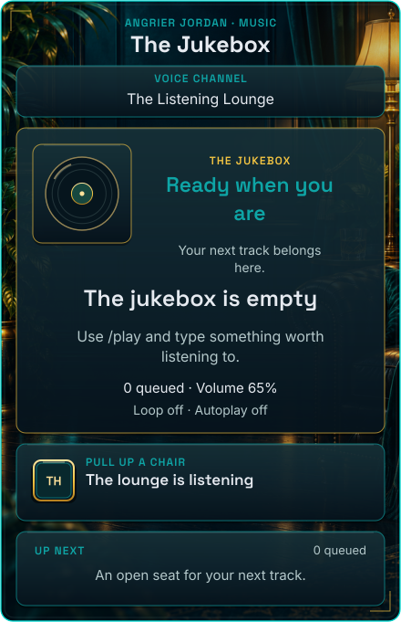
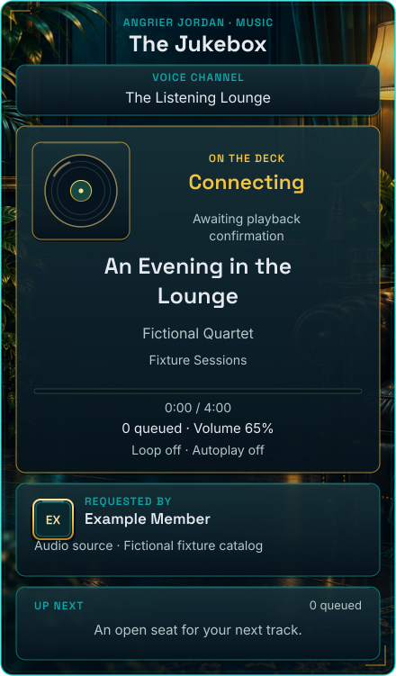
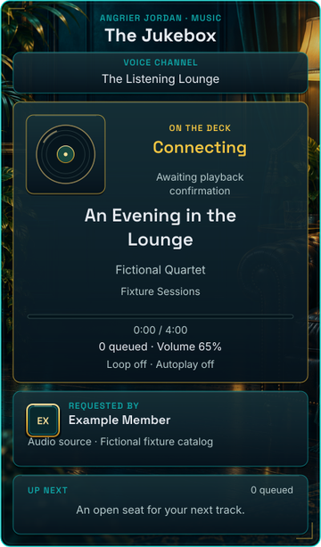
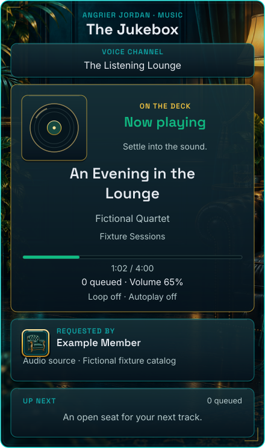
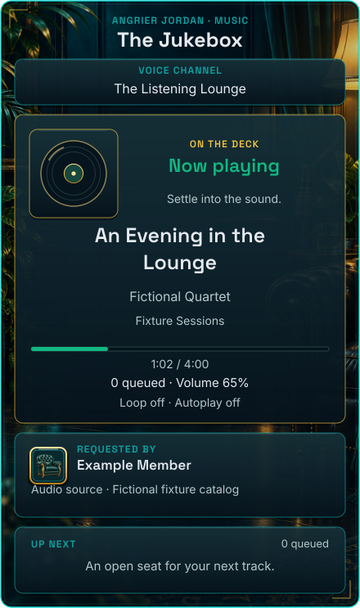
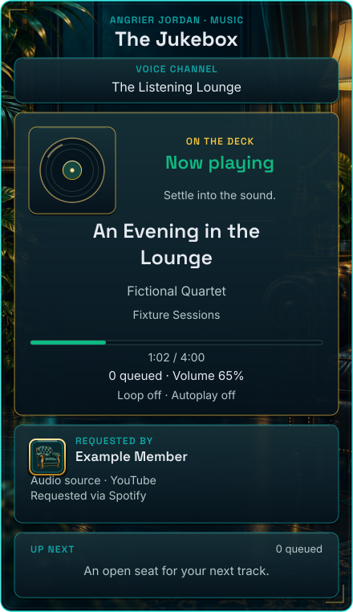
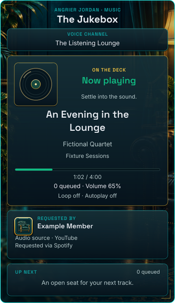
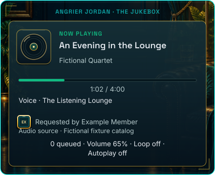
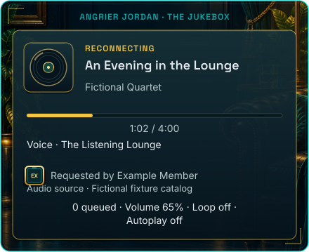
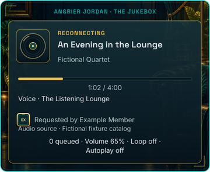
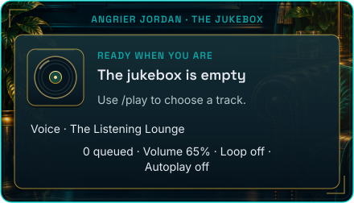
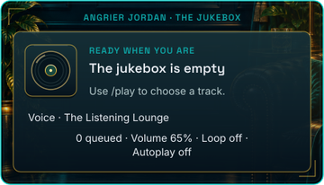
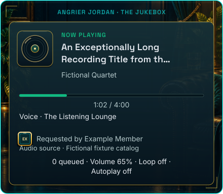
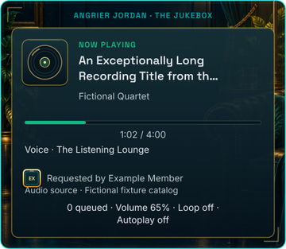
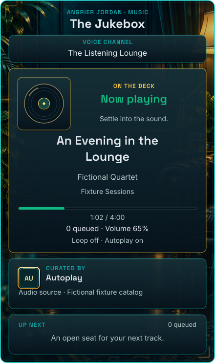
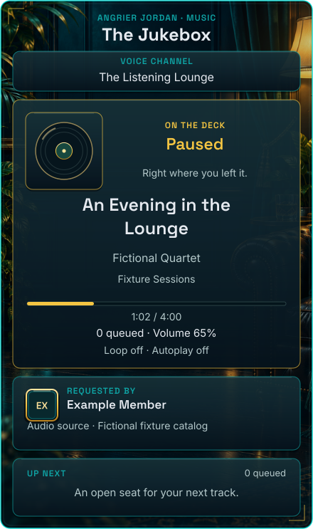
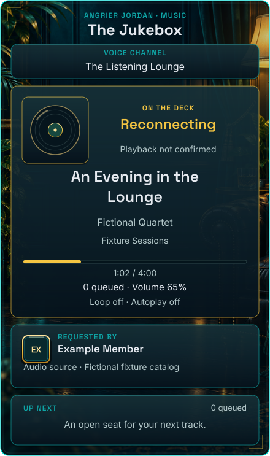
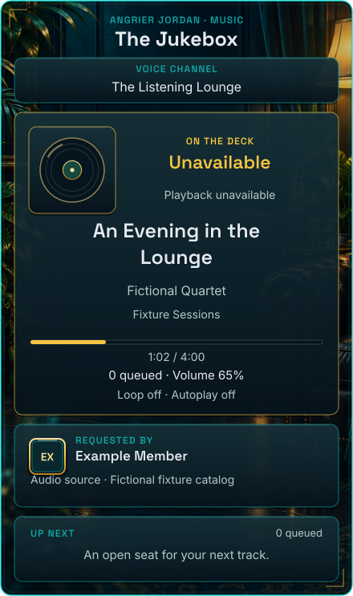
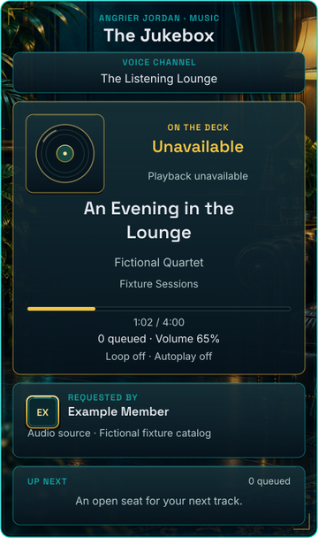
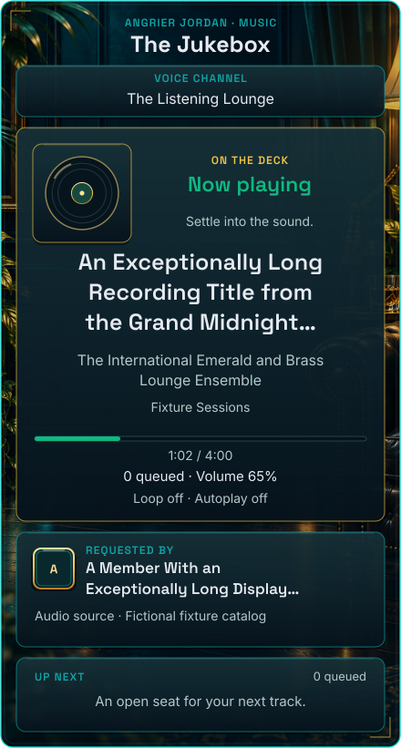
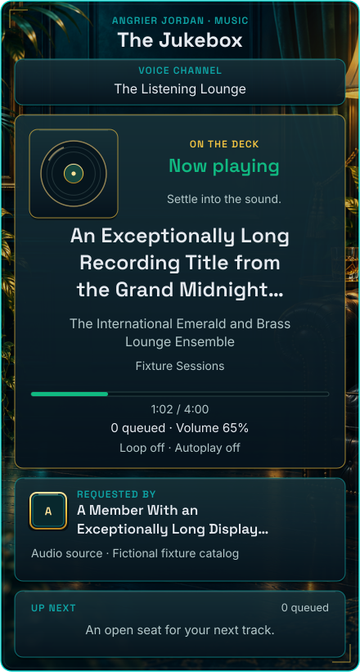
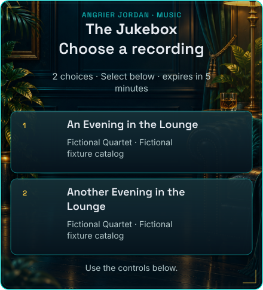
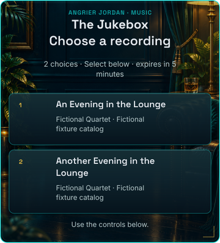
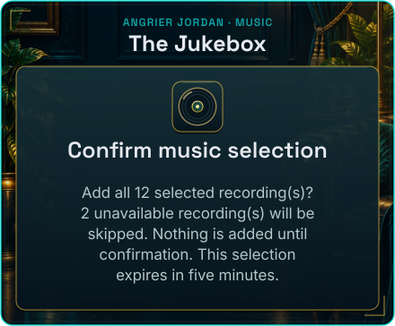
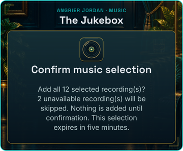
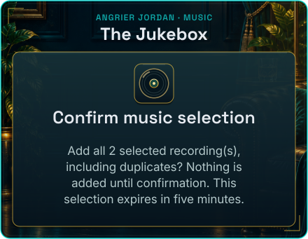
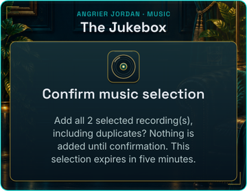
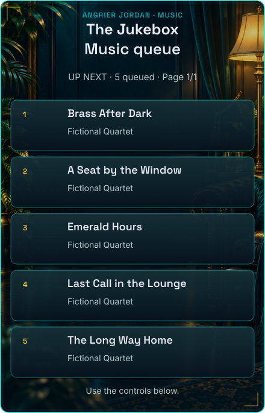
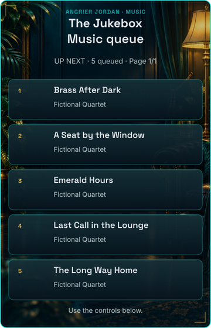
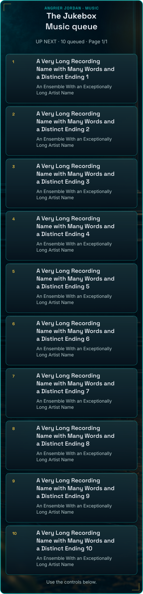
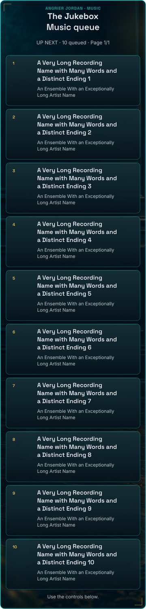
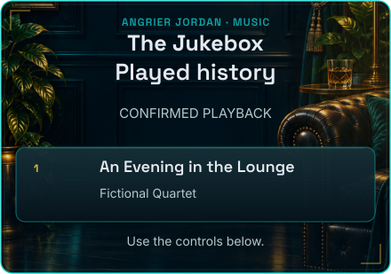
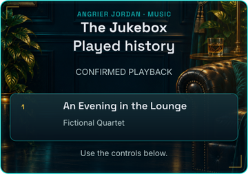
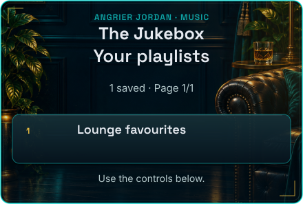
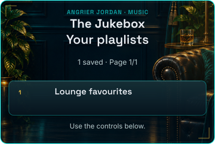
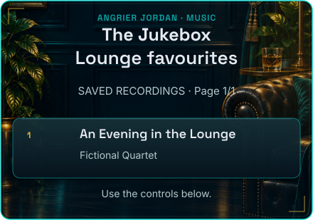
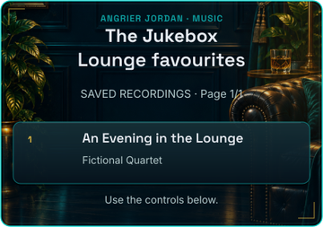
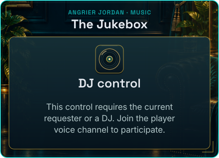
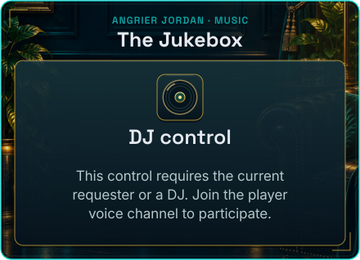
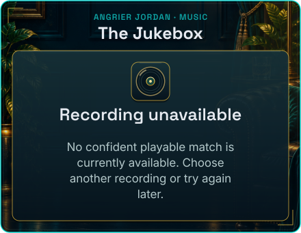
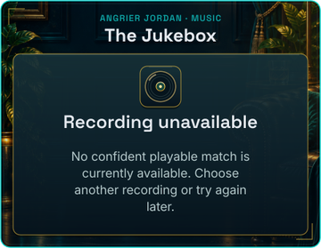